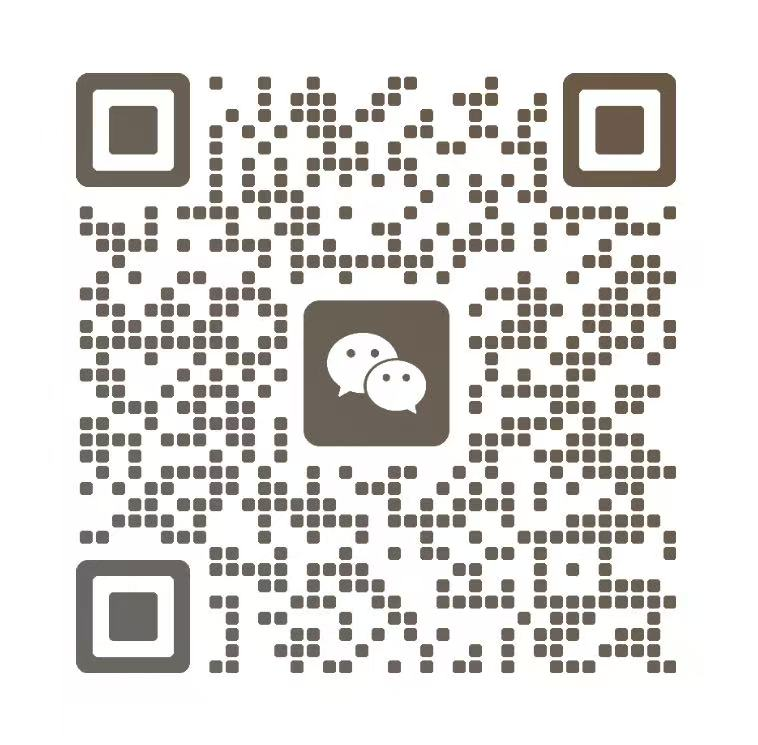

若者の力と知恵で、ともに未来へ
若者とともに、未来へ歩む。
協会について
中日青年人材発展協会
若者の力を結び、
知恵で未来を拓く。
若者を起点に、日中の
人材・科学技術・文化をつなぐ。
中日青年人材発展協会は、日中の若者の対話と協力を促し、人材・科学技術・文化の交流を推進することを使命としています。理事会および運営の中核を担うメンバーは、日中の大学にゆかりのある若手研究者や各分野の専門人材で構成されています。
若者の成長、人材交流、連携の発展を軸に、個人と組織の多様なニーズをつなぎます。一つの出会いや採用イベントから、連携拠点の開設、新たなプロジェクトの交流まで、行政、企業、大学、研究機関が継続的に対話し、協力できる実践的な場をつくります。
若者の成長を支える
交流イベントやテーマ別フォーラム、懇親会を通じて、専門や経験の異なる若者が集い、語り合いながら視野を広げ、つながりを育みます。
人材交流を促進する
企業や大学の採用活動、自治体の人材誘致を通じて、採用機関と日本在住の人材をつなぎ、キャリアの選択肢や成長の機会に出会う場を提供します。
連携の発展を後押しする
若者のラウンドテーブル、連携拠点の開設、イノベーション・起業イベントを通じて、大学、企業、人材の対話を促し、交流の成果を次の協力へつなげます。
- 行政・企業・大学との連携
- 人材交流イベント
- 延べ参加者数
- 共同設立の人材連携拠点
青年若者の交流
交流の場で、
ともに歩む仲間と。
交流イベントからテーマ別フォーラムまで。さまざまな経験を持つ人が集い、考えを分かち合い、視野を広げます。


人材人材との出会い
才能と機会が、
ここで出会う。
企業、自治体、大学の採用イベントを中心に、採用機関と日本在住の人材が直接対話できる場を提供します。


発展協働と創造
連携の拠点から、
創造の未来へ。
若者のラウンドテーブルから、連携拠点の開設、イノベーション・起業コンテストまで。人材、組織、新たなプロジェクトをつなぎます。


連携の流れ
一つの連携に、一歩ずつ、確かなサポートを。
ご相談
目的と連携の方向性を共有
企画づくり
必要なリソースと実施計画を調整
現地での実施
日中のチームが連携して推進
継続フォロー
成果を振り返り、次の連携へ
連携・お問い合わせ
協会とともに、次の一歩へ新たなつながりは、
あなたの一歩から。
成長、人材、新たな連携について。
まずは、お話しすることから始めませんか。
お問い合わせ

日本の連絡先住所東京都新宿区百人町
中国の連絡先住所上海市普陀区・西安市蓮湖区・長沙市岳麓区